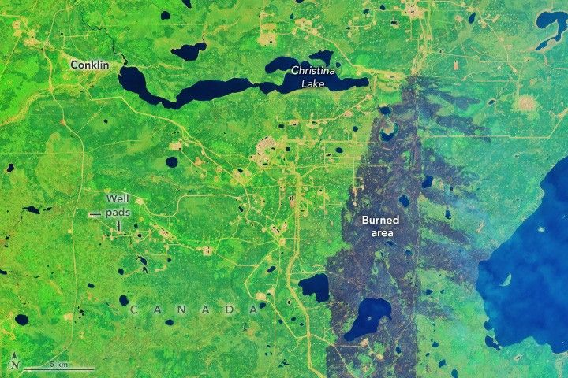

Fires Near Alberta’s Oil Sands
Canada has vast boreal forests that span from the Yukon in the west to Newfoundland and Labrador in the east. Each year, thousands of wildland fires char millions of hectares of these forests, particularly in the northern areas, where few people live and development is scarce. Indeed, some amount of fire is beneficial to boreal forest health and biodiversity.
Challenges arise when human activity and fires collide, as they did in May and June 2025, when several large fires raged in northern Alberta’s oil sands region. The fast-developing region is home to the world’s fourth-largest proven oil reserves. The oil sands accounted for 58 percent of oil production in Canada in 2023, according to the Canadian Association of Petroleum Producers.
On May 30, 2025, the OLI (Operational Land Imager) on Landsat 8 captured this false-color image of charred lands around oil infrastructure near Conklin. This band combination (6-5-3) helps to distinguish between unburned vegetated areas (green) and recently burned landscapes (brown). Thicker parts of the smoke plume appear light blue. Well pads and other gas and oil infrastructure appear as rectangular clearings connected by roads.
In June, news reports indicated that fires in Alberta forced some companies to evacuate workers and temporarily pushed a portion of the province’s oil production offline. Subsequent reports indicated that production resumed after conditions improved. Alberta still had 51 out-of-control wildfires burning on June 4, 2025, according to the Canadian Interagency Forest Fire Center.